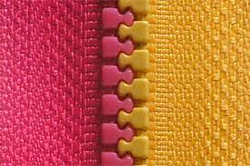
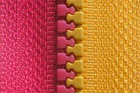

CIERRES
Monofilamento
Este cierre se produce como su nombre lo indica. Se trata de un solo filamento de nylon u otro material que se “enrosca”para formar los dientes. Luego se cose a la cinta de la cremallera para formar el cierre. Este tipo de cierres se suele utilizar para productos outdoor como camperas, valijas, carpas, mochilas de trekking, valijas de viaje y camping. La razón para usarlo en este tipo de productos es que estos cierres cuentan con mayor resistencia a fuerzas horizontales
Al ser un solo monofilamento, es difícil que se rompa un diente, con lo cual puede soportar grandes fuerzas como cuando se sobrecarga una valija. También son fácilmente reparables en caso de que un diente se salga de alineamiento.
Una característica importante de este tipo de cierres es que el deslizador se puede poner de ambos lados pudiendo crear un cierre invertido (cierre invisible). Generalmente se distinguen 2 tipos de cierres invisibles monofilamento. Tipo A que son los realmente invisibles que se utilizan por ejemplo en las polleras y vestidos de las mujeres y tipo B, el cierre invertido o falso invisible.
La diferencia es facilmente distinguible dado que en el cierre invisible, no se puede ver el deslizador, se encuentra del lado interno. Por otro lado, la cinta del cierre invisible cuenta con pequeños pliegos que permiten al costurero coser hasta la línea de costura, permitiendo un acabado fino y no pudiendo ver los dientes del cierre en la prenda terminada.
Diente de perro
Los cierres con separadores moldeados en plásticos «Diente de perro» son finos y sin embargo fuertes y duraderos diseñados con amplitud adicional para dar un acabado suave y recto a la aplicación su aspecto decorativo los hace adecuados para ropa de esquiar y de exteriores
 
